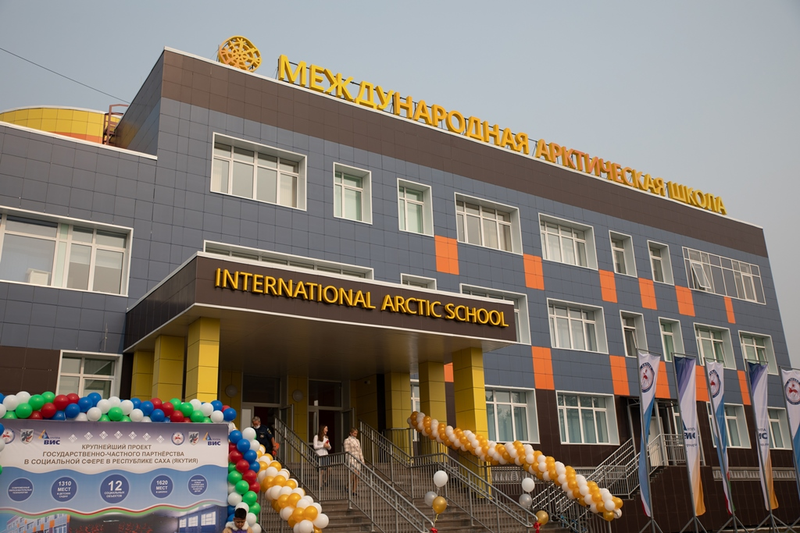

• историко-филологический — расширение предметов: история
• социально-экономический — расширение предметов: обществознание
• информационно-математический — расширение предметов: информатика
• физико-математический — расширение предметов: физика
• химико-биологический — расширение предметов: химия
• «китайский язык» — расширение предметов: история
- результатов вступительных экзаменов или ГИА/ОГЭ;
- оценки достижений поступающего;
- оценки индивидуального собеседования или мотивационного эссе.
Поступающие в 10 класс, не имеющие ГИА/ОГЭ по английскому языку, сдают экзамен по английскому языку в письменной и устной форме в МАШ
- копия документа, удостоверяющего личность родителя;
- копия нотариально заверенной доверенности, если заявитель представляет интересы ребенка;
- копия свидетельства о рождении ребенка или паспорта ребенка;
- копии документов о достижениях ребенка за последние три года (по желанию).
